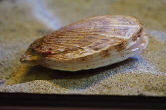

ようしょくほたてがい（養殖帆立貝）の生産量 都道府県ランキング
1位から3位までと、とれた量
ようしょくほたてがいが日本でいちばん多く育てられているのは北海道です。8万4,508 tで、全国（11万9,450 t）の71%を占めます。

| 順位 | 都道府県 | 収獲量 | 全国に占める割合 |
|---|---|---|---|
| 1位 | 北海道 | 8万4,508 t | 71% |
| 2位 | 青森県 | 3万1,263 t | 26% |
| 3位 | 宮城県 | 3,057 t | 2.6% |
この数字について
- 分類：貝の仲間
- 全国の収獲量：11万9,450 t
- この数字が表すもの：収獲量（養殖で育てて取り上げた重さ）
- 調査：海面漁業生産統計調査（海面養殖業） 令和6年
- この品目は養殖の統計です。
- 4県分を調査（調査していない県は順位に入りません）
ようしょくほたてがいの生産量について、よくある質問
- ようしょくほたてがいの生産量が日本一の都道府県はどこですか？
- 北海道です。海面漁業生産統計調査（海面養殖業）（令和6年）で8万4,508 tでした。
- ようしょくほたてがいの生産量ランキング2位・3位はどこですか？
- 2位は青森県（3万1,263 t）、3位は宮城県（3,057 t）です。
- ようしょくほたてがいの全国の生産量はどれくらいですか？
- 11万9,450 t（令和6年）です。